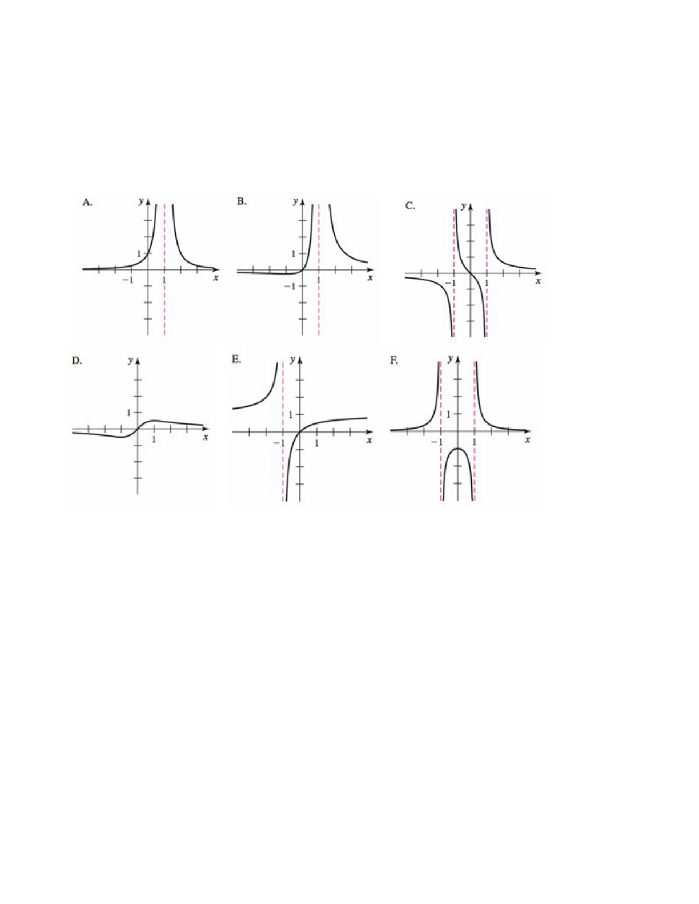

- (a)
- The function \(f\) defined by \(\displaystyle f(x) = \frac {x}{x^2 + 1}\).
- (b)
- The function \(g\) defined by \(\displaystyle g(x) = \frac {x}{x^2 -1}\). Candidates for vertical asymptotes:\begin{align*} x^2 -1 = 0 &\implies \mbox {$x = 1$ or $x = -1$.} \end{align*}
Test of candidate \(x = 1\):
\begin{align*} \lim _{x \to 1^+} \frac {x}{x^2 -1} &= \lim _{x \to 1^+}\frac {x}{(x-1)(x+1)} = \infty \\ \end{align*}Note: the limit is of the form \(\frac { \#}{0}\), the numerator positive, the denominator also positive.
Therefore, vertical asymptote at \(x = 1\).Test of candidate \(x = -1\):
\begin{align*} \lim _{x \to -1^-} \frac {x}{x^2 -1} &= \lim _{x \to -1^-} \frac {x}{(x-1)(x+1)}= -\infty \\ \end{align*}Note: the limit is of the form \(\frac { \#}{0}\), the numerator negative, the denominator positive.
Therefore, vertical asymptote at \(x = -1\).Since \(g(0) = 0\), the only listed graph that can match is graph C.
- (c)
- The function \(h\) defined by \(\displaystyle h(x) = \frac {1}{x^2 -1}\). Candidates for vertical asymptotes: \(x = 1\) and \(x = -1\).
Test of candidate \(x = 1\):
\begin{align*} \lim _{x \to 1^+} \frac {1}{x^2 -1} &= \lim _{x \to 1^+} \frac {1}{(x-1)(x+1)} = \infty \\ \end{align*}Note: the limit is of the form \( \frac { \#}{0}\), the numerator positive, the denominator positive.
Therefore, vertical asymptote at \(x = 1\).Test of candidate \(x = -1\):
\begin{align*} \lim _{x \to -1^-} \frac {1}{x^2 -1} &= \lim _{x \to -1^-} \frac {1}{(x-1)(x+1)} = \infty \\ \end{align*}Note: the limit is of the form \( \frac { \#}{0}\), the numerator positive, the denominator positive.
Therefore, vertical asymptote at \(x = -1\).Since \(h(0) = -1\), the only listed graph that can match is graph F.
- (d)
- The function \(a\) defined by \(\displaystyle a(x) = \frac {x}{(x-1)^2}\). Candidate for the vertical asymptote: \(x = 1\).
Test of candidate \(x = 1\):
\begin{align*} \lim _{x \to 1^+}\frac {x}{(x-1)^2} &= \infty \\ \end{align*}Note: the limit is of the form \( \frac { \#}{0}\), the numerator positive, the denominator positive.
Therefore, vertical asymptote at \(x = 1\).Since \(a(0) = 0\) the graph is graph B.
- (e)
- The function \(s\) defined by \(\displaystyle s(x) = \frac {1}{(x-1)^2}\). Candidate for the vertical asymptote: \(x = 1\).
Test of candidate \(x = 1\):
\begin{align*} \lim _{x \to 1^+} \frac {1}{(x-1)^2} &= \infty \\ \end{align*}Note: the limit is of the form \( \frac {\#}{0}\), the numerator positive, the denominator positive.
Therefore, vertical asymptote at \(x = 1\).Since \(s(0) = 1\) the graph is graph A.
- (f)
- The function \(r\) defined by \(\displaystyle r(x) = \frac {x}{x+1}\). Candidate for the vertical asymptote: \(x = -1\).
Test of candidate \(x = -1\):
\begin{align*} \lim _{x \to -1^+} \frac {x}{x+1} &= -\infty \\ \end{align*}Note: the limit is of the form \( \frac {\#}{0} \), the numerator negative, the denominator positive.
Therefore, vertical asymptote at \(x = -1\).Since \(r(0) = 0\) the graph is graph E.